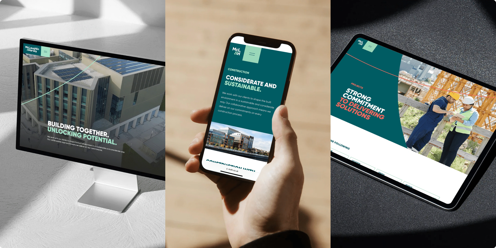
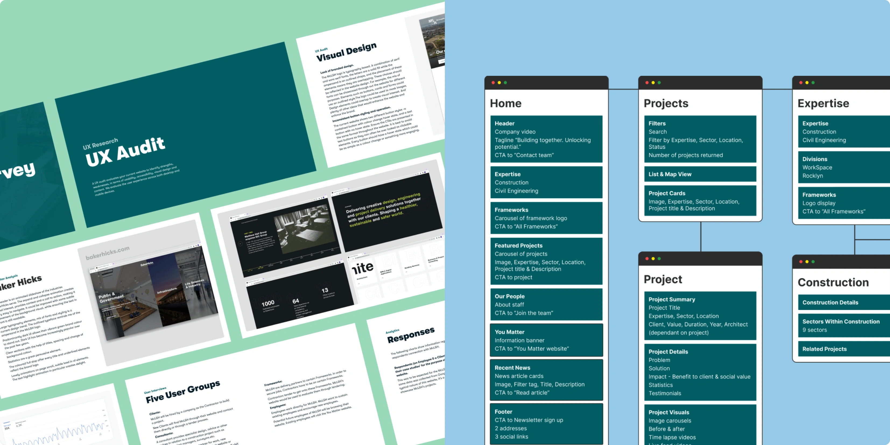
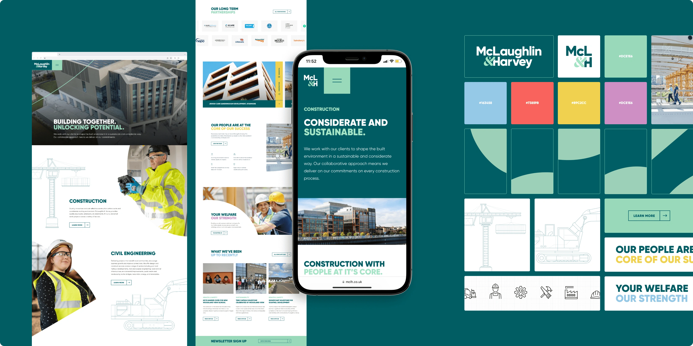
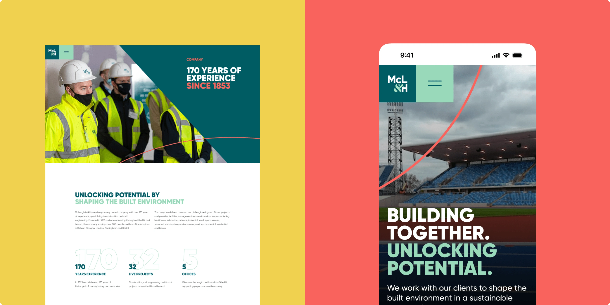
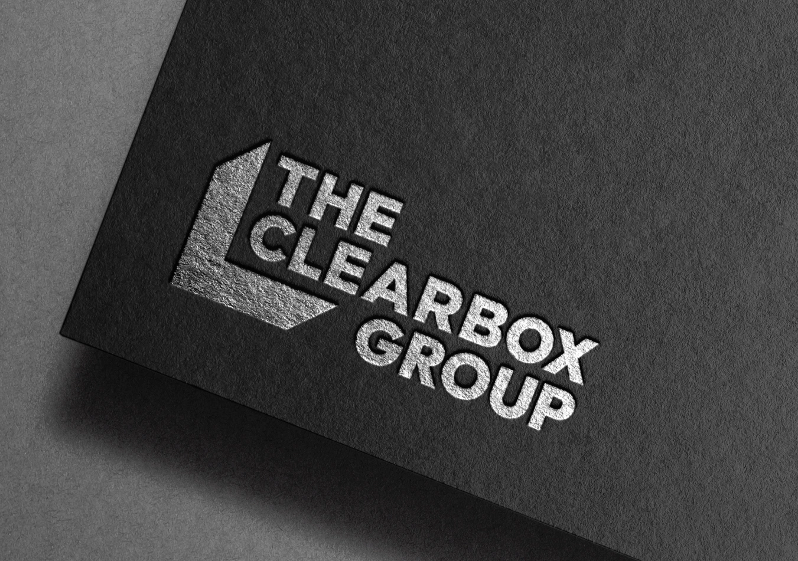
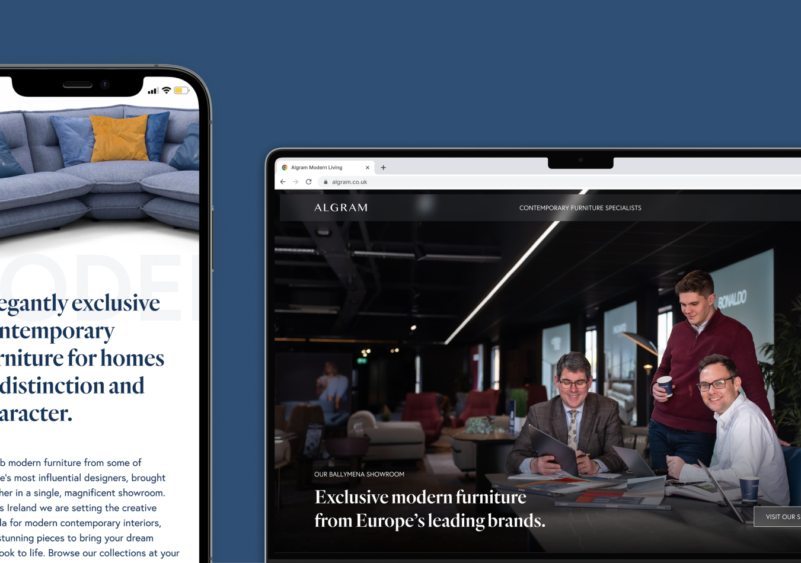
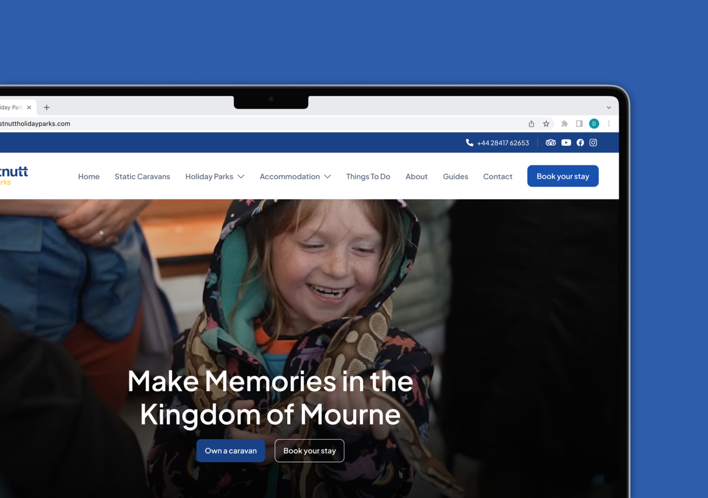
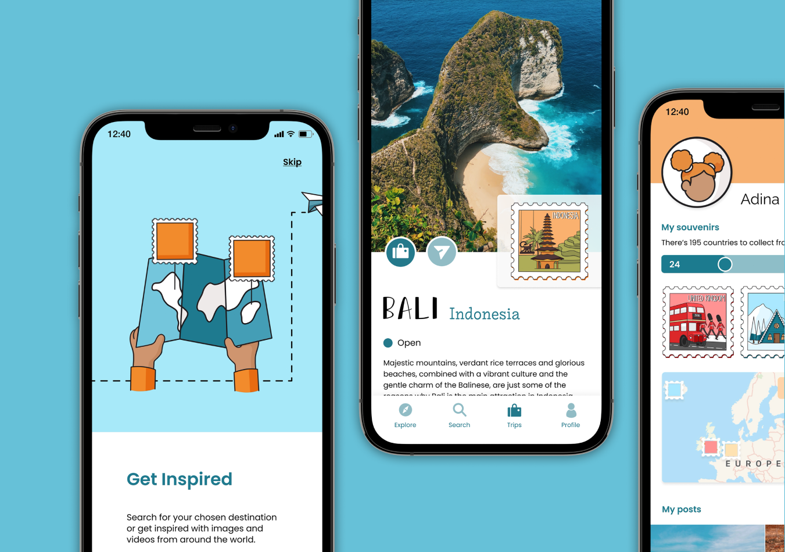
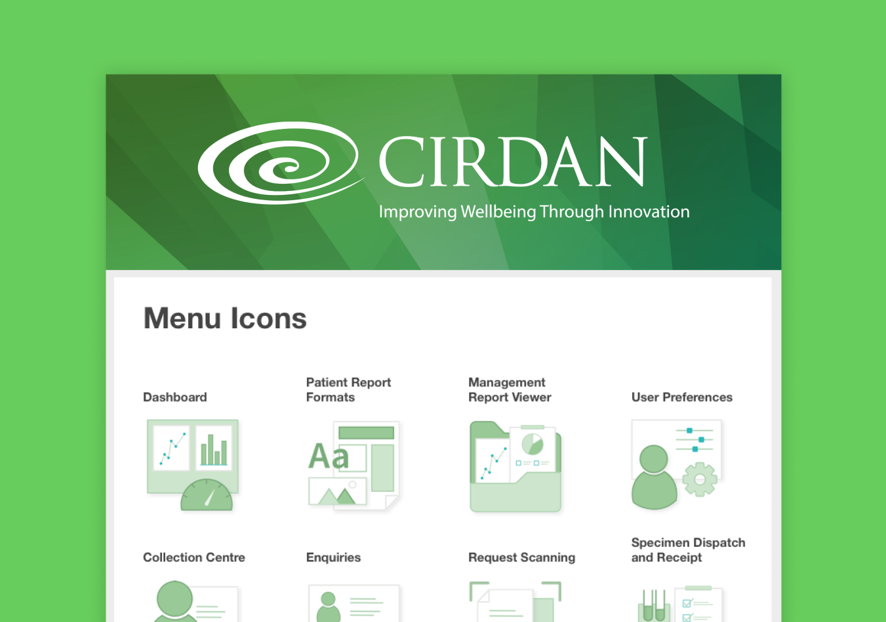

Launched 2024
McLaughlin & Harvey
With a remarkable 170 years of experience, the experts in construction and civil engineering 🏗️
Visit website
With a remarkable 170 years of experience, the experts in construction and civil engineering 🏗️
Visit websiteWith a remarkable 170 years of experience, McLaughlin & Harvey are experts in delivering high-quality projects in construction and civil engineering across diverse industry sectors. Collaborating with the renowned McL&H team was an incredible opportunity for myself and the team at DHD.
Role: UX Researcher & Designer working alongside Lead Developer
Timeframe: 14 months
Deliverables: Website redesign for McL&H to showcase their brand refresh and streamline the user journey. As well as the redesign of their sister site - YouMatter.

Our engagement with McL&H began with a project kick-off meeting aimed at identifying the objectives of the website redesign. Their existing website had been in use for over 4 years, therefore it was time to visually refresh their portfolio. The project sought to enhance the backend content management system to enable more flexible content. This was particularly important for their case studies, as each demanded a variety of content formats including live video feeds, interactive maps, gallery images, persuasive statistics, testimonials and more. The final major objective was to ensure the sister website, You Matter, integrated with the main McL&H website. A division of McL&H that focuses more specifically on their employer brand, providing a sense of community in the construction industry as well as various helpful resources.
After initiating a comprehensive UX audit, a deeper issue emerged. The website’s sprawling sitemap and disorganised page layouts were causing significant navigational hurdles. For instance, the presence of 345 projects caused prolonged page load times, older news posts lacked effective filtering options to be seen and the frameworks page required excessive scrolling. The challenge was to condense a large content-heavy website into a more streamlined user-friendly browsing experience.
Following this, we identified the five user groups: Clients, Consultants, Sub-Contractors, Frameworks, and Employees. A survey with these user groups gathered insights on their specific priorities when browsing the website. While, a competitor analysis highlighted a high standard of competing websites that we needed to exceed.

A collaborative site map workshop with the McL&H team allowed for content reduction and reorganisation to create a streamlined user experience.
Simultaneous with the website design phase, McL&H made the strategic decision to refresh their brand identity. Therefore it was necessary to work in close collaboration with another creative agency to align our design choices. This synergy resulted in an elevated website design, as it allowed for expanded colour palettes, new fonts, and fresh design elements to enhance visual appeal.

The new McLaughlin & Harvey website seamlessly integrates the company's personality while effectively narrating its journey of success. Content navigation has been vastly improved through the implementation of a comprehensive mega menu and a coherent page hierarchy.
Our collaboration with McL&H continued as we extended our efforts towards their sister website, You Matter. This involved aligning the design of this platform with the newly transformed McLaughlin & Harvey website. The aim was to amplify their brand presence and ensure a seamless interconnection between both websites, maintaining a consistent experience across the digital ecosystem.


Fresh brand identities and website redesigns for three divisions within The Clearbox Group 📣
Read project
Northern Ireland’s modern furniture specialists, a luxury furniture store 🛋️
Read project
A multi-award winning, family owned Holiday Home business, nestled at the foot of the Mourne Mountains ⛰️
Read project
Replace 10+ travel apps with Hidden, connecting you with locals & past visitors to find the hidden gems of your next adventure 🗺️️
Read project
Product design in healthcare technology, shaping a clinical lab web app used by scientists worldwide 🩺
Read project